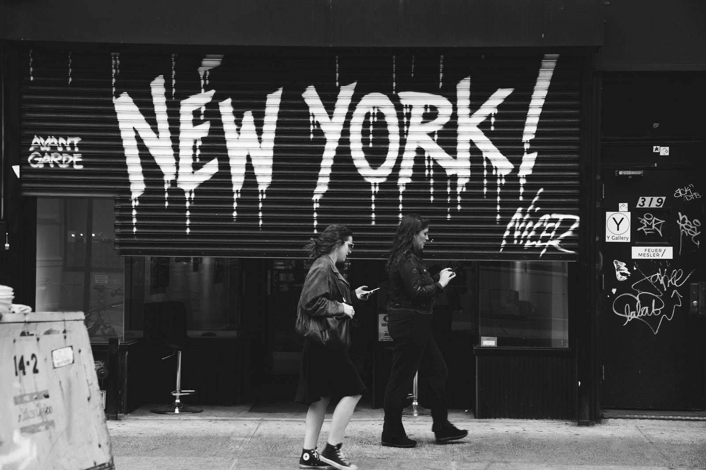
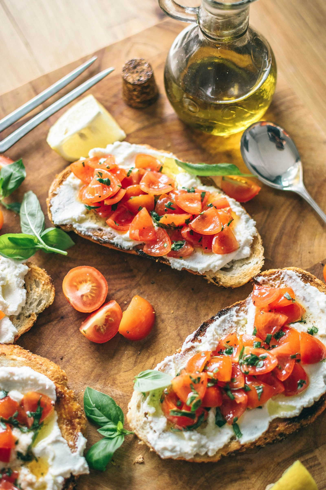

Italian Classes
59 articoli in questa categoria.
Zakelijk Italiaans: wat Nederlandse professionals echt nodig hebben
Formeel register, e-mails, telefoneren en de culturele codes van de Italiaanse zakenwereld, gezien vanuit Nederlandse directheid.
5 mei 2026
Tweetalig opvoeden met Italiaans: hoe begin je, en wat werkt echt
Praktische aanpak voor Nederlands-Italiaanse gezinnen: welke methode werkt, wat je moet verwachten per leeftijd, en wat je doet als je kind weigert Italiaans te praten.
8 mei 2026
Italiaans voor op vakantie: de zinnen die je écht gebruikt
Welke Italiaanse zinnen je op vakantie werkelijk nodig hebt, welke je overal leert maar nooit gebruikt, en hoeveel tijd je er realistisch voor nodig hebt.
1 mei 2026
Italiaans leren voor je Italiaanse schoonfamilie
De zondagse lunch bij de schoonfamilie is geen taaltoets, maar het voelt wel zo. Wat je echt nodig hebt.
18 juli 2026
Italiaans voor je huis in Italië: de woorden die je bij de notaris en de aannemer nodig hebt
Geometra, rogito, visura, preventivo, IMU. De woorden waar je niet omheen kunt als je een huis in Italië hebt, en die in geen enkele cursus voorkomen.
15 juli 2026Online Italiaanse les of op locatie? Wat het echt uitmaakt
Didactisch scheelt het weinig. Op discipline, kinderen en spontaan contact scheelt het wel.
7 juli 2026
Privéles of groepsles Italiaans? Een eerlijke vergelijking
In een groep van acht spreek je zeven minuten per uur. Maar dat is niet het hele verhaal — soms is de groep gewoon beter.
4 juli 2026
Italiaans leren in Ede, Wageningen en omgeving: alle opties
Buiten de Randstad is het aanbod voor Italiaans dun. Een overzicht van wat er wél is in de regio Ede, en hoe je kiest.
30 juni 2026
Hoeveel tijd kost het om Italiaans te leren?
Van A1 tot B2 in uren, vertaald naar een realistische kalender. Plus de vier factoren die het verschil maken.
22 juni 2026Italiaans leren na je 50e: wat er verandert en wat niet
Het idee dat je na een bepaalde leeftijd geen taal meer leert, klopt niet. Wat wel klopt is dat je het anders moet aanpakken.
18 juni 2026Wat kost een Italiaanse les in Nederland?
Van vijftien euro op een online platform tot zeventig euro voor een privéles aan huis. Wat verklaart dat verschil, en wat heb jij nodig?
11 juni 2026Italiaans B1 voor het Italiaanse staatsburgerschap: wat je moet weten
Een B1-certificaat is verplicht voor de Italiaanse nationaliteit. Maar niet elk B1 is hetzelfde — en die keuze kan later tegen je werken.
7 juni 2026
CILS, CELI of PLIDA? Zo kies je het juiste Italiaanse certificaat
CILS, CELI, PLIDA en CERT.IT lijken uitwisselbaar, maar dat zijn ze niet. Een overzicht van de verschillen die er echt toe doen.
4 juni 2026Navigating Italian Language Learning: From Italy vs. Abroad
Learning Italian: emersion in Italy for natural growth or structured online classes from abroad offers benefits. Learning Italian can be a thrilling…
3 dicembre 2023
Veelgestelde vragen over Italiaans leren in Amsterdam en online
Waarom kiezen voor privélessen Italiaans? Privélessen zijn volledig afgestemd op jouw niveau, tempo en doelen. Je krijgt maximale spreektijd, directe…
10 ottobre 2022